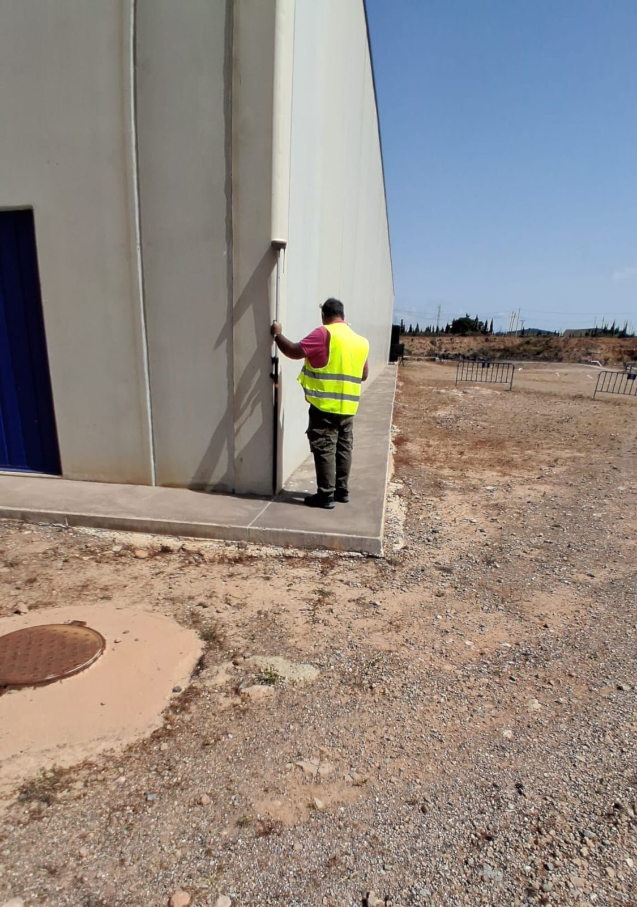
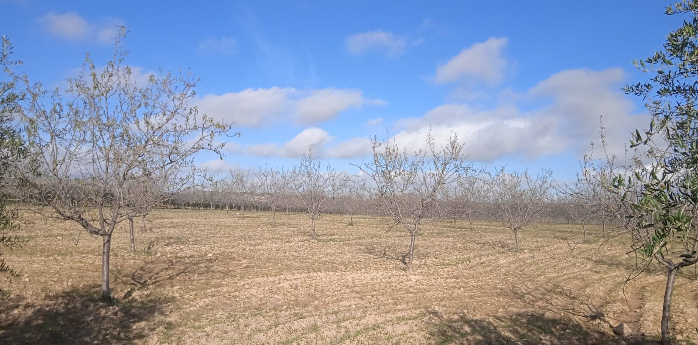
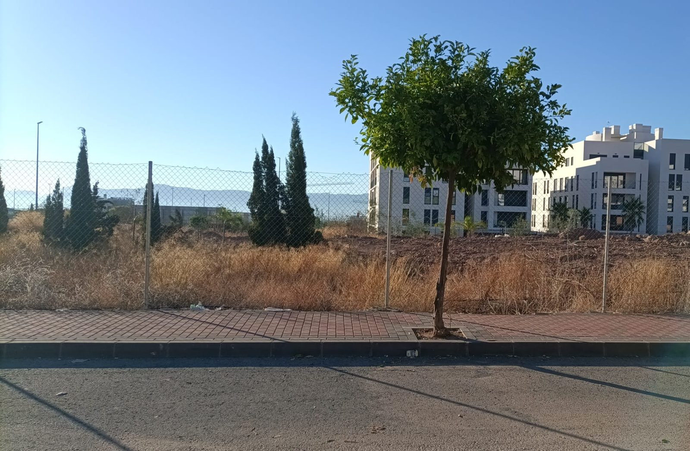
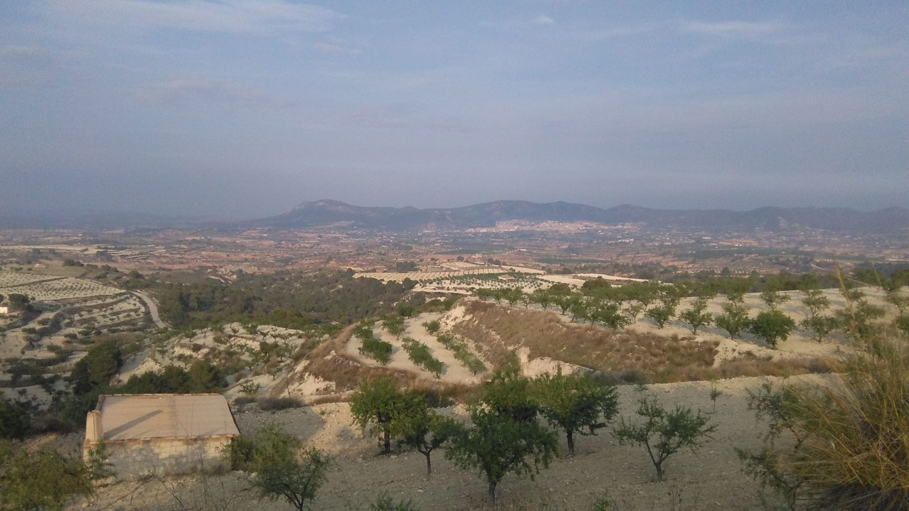
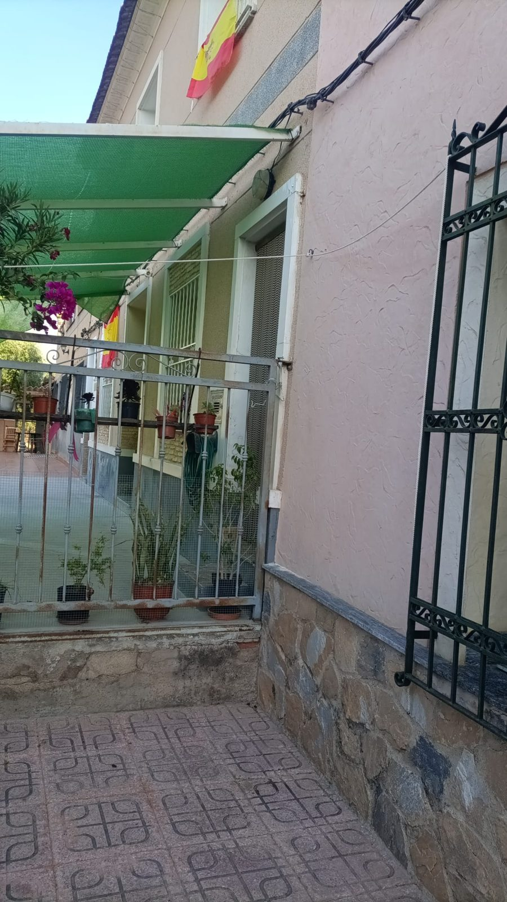
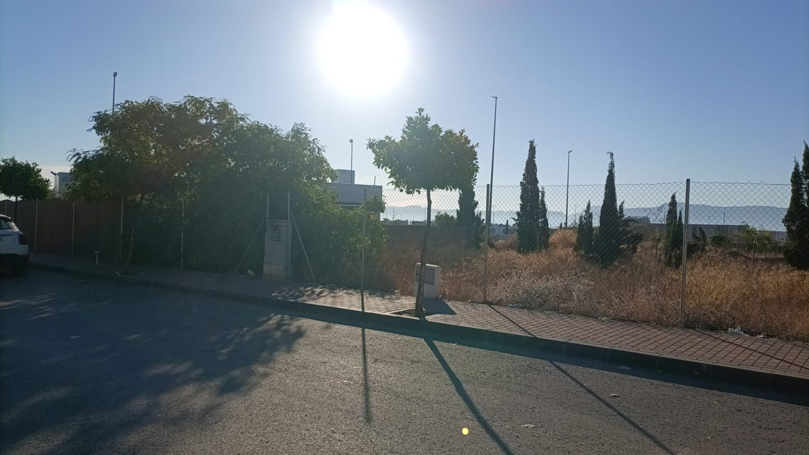
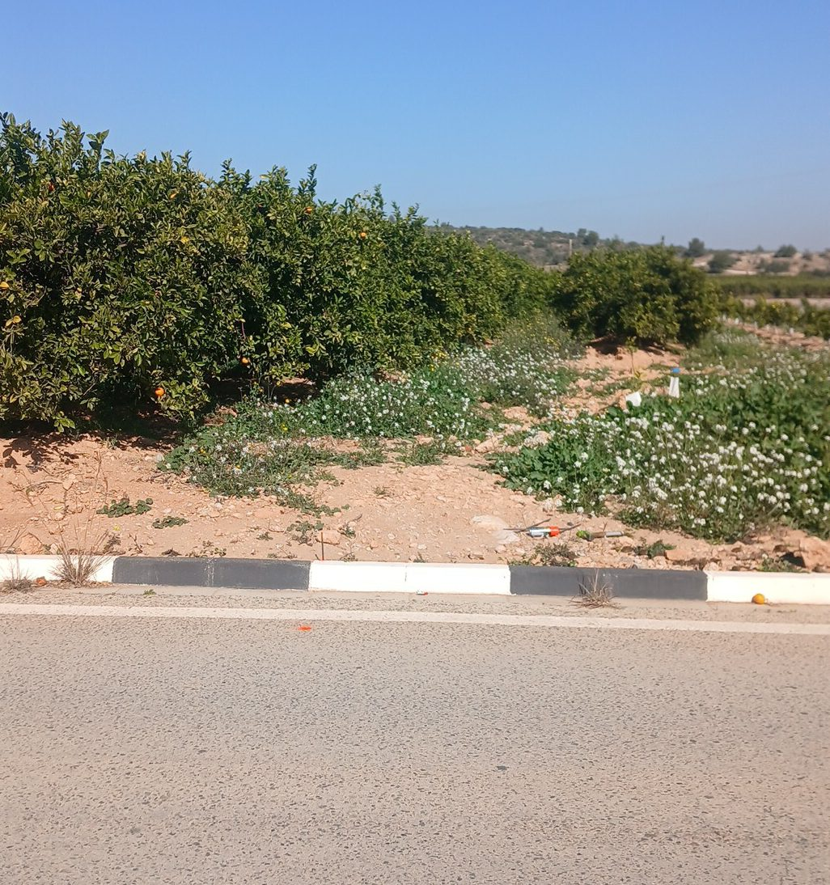
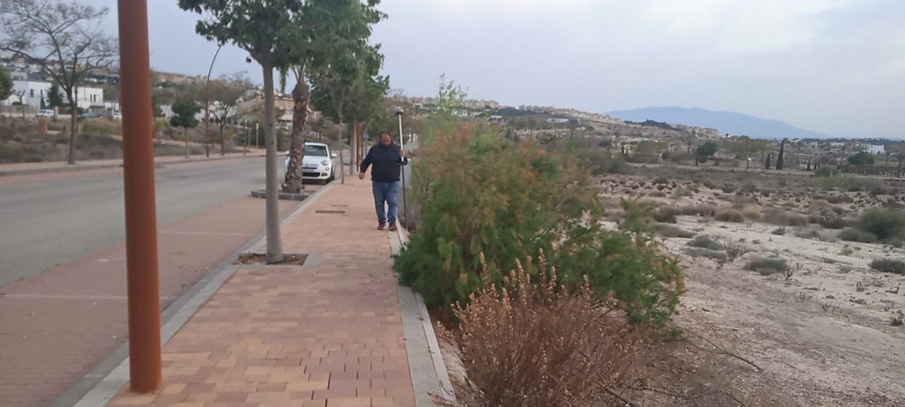
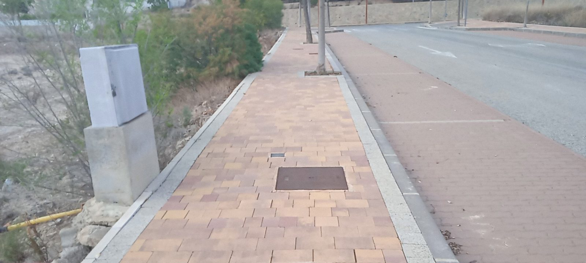

Informes periciales
Para juicios de lindes, invasiones, servidumbres, caminos y herencias. Con fotos, evolución de la cartografía catastral, estudio registral, ortofotos y medición real.
Ver más →Medimos la finca, estudiamos las escrituras y el Catastro, y lo arreglamos todo en un solo encargo. Desde Murcia para la Región de Murcia, Alicante, Valencia, Albacete y Madrid.
Lo normal es tener que ir del topógrafo al gestor, del gestor a la notaría y de la notaría al Registro. Con nosotros no: el mismo equipo mide, estudia la documentación y hace la tramitación.
Cada finca la pisamos y la medimos. Nada de dibujar a ojo sobre una foto.









Somos rastreadores de fincas: las localizamos, las medimos, las identificamos y dejamos los papeles en regla.
Para juicios de lindes, invasiones, servidumbres, caminos y herencias. Con fotos, evolución de la cartografía catastral, estudio registral, ortofotos y medición real.
Ver más →Coordinación Catastro-Registro, IVG y GML, ICUC, expedientes del artículo 199 de la Ley Hipotecaria y oposiciones a los del vecino.
Ver más →Medición de fincas rústicas y urbanas, levantamientos con curvas de nivel, replanteo de linderos y planos georreferenciados.
Ver más →De viviendas, naves y construcciones agrarias, con ortofotografías históricas que acreditan la fecha y planos de situación.
Ver más →Localizamos lo que otros no encuentran: fincas heredadas, sin referencia catastral o con discrepancias entre Catastro y Registro.
Ver más →Segregación de parcelas, agrupaciones, divisiones de terrenos y planos y anexos descriptivos para escrituras.
Ver más →Informes y certificados urbanísticos, estudios de viabilidad, tramitación de licencias y gestión ante organismos públicos.
Ver más →Estudios de inundabilidad, afecciones por cauces e informes para las Confederaciones Hidrográficas.
Ver más →Valoraciones de fincas para herencias y repartos, y mediación entre herederos o vecinos antes de llegar al juzgado.
Ver más →Localizamos, medimos y regularizamos tu propiedad. Del plano a la realidad.
Conocimiento del territorio y del sector agrícola.
Datos fiables y verificables, medidos con GNSS RTK.
Atención personalizada en cada expediente.
Documentación conforme a la normativa vigente.
Desde la medición hasta la inscripción registral.
La documentación correcta evita problemas futuros.
Antes de darte un precio estudiamos tu finca. Así el presupuesto es el que es.
Por el formulario, WhatsApp o correo. Con la referencia catastral o la nota simple nos basta para empezar.
Antes de presupuestar miramos el Catastro de tu finca y de los colindantes, el Registro y las ortofotos.
Estudiamos tu caso y te hacemos un presupuesto gratis y sin compromiso: qué hace falta, qué no y cuánto es. Sin sorpresas.
Trabajo de campo, planos, GML y la tramitación en Catastro, notaría o Registro hasta el final.
Organizamos las salidas de campo por zonas para que el desplazamiento no encarezca el trabajo.
Nuestra base. Murcia, Molina, Mula, Cartagena, Mazarrón, Torre-Pacheco, la Huerta y pedanías.
Ver zona →Marina Alta y Marina Baixa: Calpe, Benissa, Moraira, Teulada, Jávea, Altea, Benidorm, Finestrat.
Ver zona →Orihuela, El Rafal, Benejúzar, Almoradí, Callosa, Torrevieja. A media hora de Murcia.
Ver zona →Tibi, Castalla, Ibi, Onil, Jijona, Alcoy y el interior de Alicante.
Ver zona →Informes periciales para despachos de abogados en Valencia y la Ribera (Sueca, Corbera, Alzira).
Ver zona →Trabajos de Catastro y Registro sin desplazarnos, y salidas programadas para medir.
Ver zona →Lo que más nos preguntan, explicado en sencillo.
Un equipo de ingeniería, economía y topografía con más de 30 años resolviendo problemas de fincas.
Economista colegiado (Colegio de Economistas de Murcia, n.º 30/1919) y auxiliar topográfico con cualificación acreditada. Dirige los estudios registrales y catastrales, las valoraciones y los informes periciales.
Ingeniera Técnica Agrícola, colegiada n.º 889 del COGITARM. Firma los planos, los certificados y los trámites ante la Sede Electrónica del Catastro.
Es lo más habitual. Medimos la finca real, comparamos las tres cabidas (registral, catastral y real) y te decimos cuál es el camino para que todo cuadre: un IVG, un expediente del artículo 199 o una rectificación en notaría.
Sí. Trabajamos de forma habitual en Alicante (Costa Blanca, Vega Baja y el interior), Valencia y Albacete. Para Madrid hacemos sin desplazarnos todo lo que se puede hacer sobre cartografía y documentación.
La referencia catastral o la dirección de la finca, y si la tienes, la nota simple o las escrituras. Con eso estudiamos el caso antes de darte el precio.
Sí. Hacemos informes periciales de lindes, invasiones, servidumbres y caminos, y asistimos al juicio para ratificarlos.
Mándanos lo que tengas (escrituras, nota simple, referencia catastral o fotos) y estudiamos tu caso y te hacemos un presupuesto gratis.